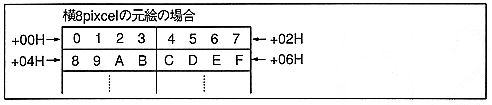

Lookup table mode using a color lookup table.
∙ 4 pixels represent 1 pixel. 16 colors can be drawn. Character data is the same as mode 0.
∙ One color data of 16 colors stored in the color lookup table is selected with 4 bits and written to the frame buffer. When 8bit / pixel (when frame buffer is rotated or high resolution), the lower 8 bits of 16 bits are written to the frame buffer.
Write the address of the color lookup table to the lookup table address (command table start address + 06H, shared with the color bank word). The color code of the lookup table can be specified by either color bank code or RGB code. However, RGB code is prohibited at 8bit / pixel.
Figure 6.11 Mode 0, 1 drawing example
